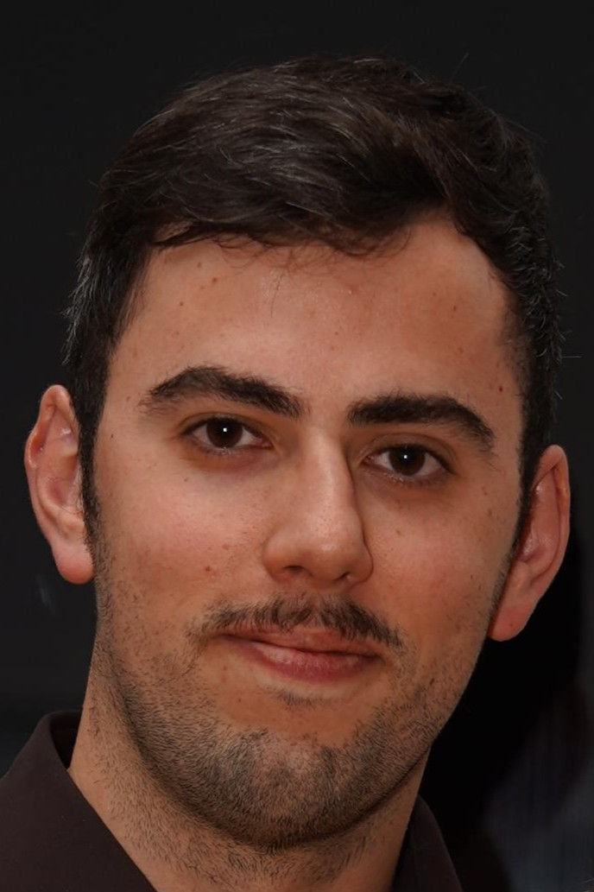

Marc Nairn-Antolín
PhD Candidate · Theoretical Quantum Optics · University of Tübingen
I am a PhD candidate in Theoretical Quantum Optics at the University of Tübingen, supervised by Beatriz Olmos-Sanchez. My research focuses on many-body quantum optics, cavity QED, and open quantum systems. I combine analytical and numerical approaches to study emergent collective effects in spin-boson models, with applications in quantum simulation, quantum computing, and engineered quantum devices.
Previously I did my undergraduate and master's studies at the University of Glasgow, where I worked on quantum and nonlinear optics.
I've also spent time at Aalto University, working on simulating 2D materials with tensor networks, and at the University of Vienna, helping the experimental quantum imaging group with biological applications.

Email: marc.nairn [at] uni-tuebingen [dot] de